יחידה נשימתית · LTAC · אוריינטציה לאחות חדשה
מדריך שימוש: משוב משמרת חניכה
איך ממלאים משוב בסוף משמרת חניכה, ואיך האחות האחראית רואה את ההתקדמות ומחליטה. ← חזרה לדף המשוב
- מילוי משוב (חונכת)
- טעיתי - מה עושים?
- התקנה ראשונה במחשב המחלקה
- סיסמת מנהלת וקוד שחזור
- סיכום התקדמות
- רישום החלטה
- PDF לתיק האישי
- ניהול אחיות
- גיבוי
- שאלות ותקלות
מילוי משוב בסוף משמרת (אחות חונכת)
פותחים את הדף מהסימנייה בדפדפן Edge (או Chrome). הלשונית מילוי משוב פתוחה לכולן, בלי סיסמה.
- שם האחות החדשה ושם האחות החונכת: בוחרים מהרשימה. אם השם עוד לא קיים - לוחצים + חדשה ומקלידים אותו (פעם אחת בלבד, אחר כך הוא ברשימה).
- תאריך המשמרת: מתמלא לבד בתאריך של היום.
משמרת לילה: התאריך הוא היום שבו המשמרת התחילה. אם ממלאים בבוקר אחרי לילה ובוחרים "לילה", הדף משנה לבד לתאריך של אתמול.
- משמרת (בוקר / ערב / לילה) ושבוע באוריינטציה (מספר, למשל 3).
- 5 הסעיפים: לכל סעיף לוחצים על ציון אחד: 1 לא בטוח · 2 הנחיה צמודה · 3 עצמאית, צריכה גיבוי · 4 עצמאית ובטוחה · — לא נצפה אם הנושא לא היה רלוונטי במשמרת (זה לא מוריד ציון).
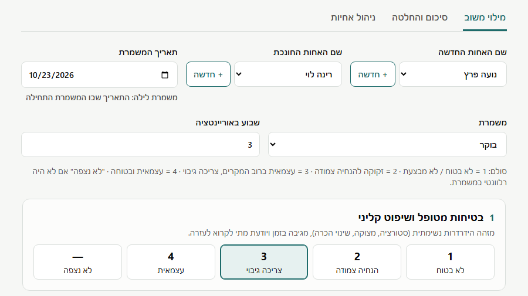
- המלצה להמשך: על סמך המשמרת הזו בלבד. חובה לבחור.
- חוזקה בולטת / נקודה לשיפור: לא חובה, אבל מאוד עוזר לחונכת הבאה. כדאי לכתוב משפט אחד.
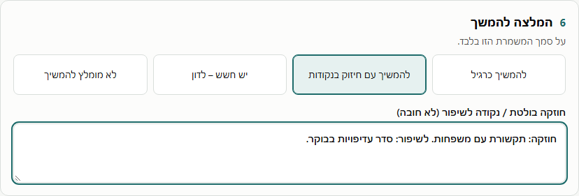
- לוחצים שמירת המשוב. הכפתור אפור עד שכל השדות החובה מולאו. מופיע "המשוב נשמר ✓" - וזהו.
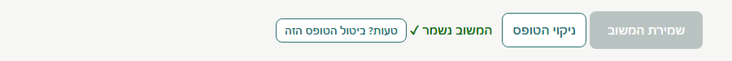
טעיתי - מה עושים?
| שמרתי ומיד שמתי לב לטעות | לוחצים טעות? ביטול הטופס הזה ליד ההודעה, ואז ממלאים מחדש. |
| טעיתי בציון / בהערה | ממלאים שוב את אותה אחות, אותו תאריך ואותה משמרת. הדף ישאל "להחליף?" - עונים כן. הטופס החדש מחליף את הישן. |
| הדף שואל "כבר קיים משוב למשמרת זו" | מישהי כבר מילאה את המשמרת הזו. לבדוק שבחרתם תאריך ומשמרת נכונים. להחליף רק אם בטוחים. |
| בחרתי תאריך לא נכון ושמרתי | לבקש מהאחות האחראית לבטל את הטופס (ראו ביטול טופס), ולמלא מחדש עם התאריך הנכון. |
האחות האחראית
התקנה ראשונה במחשב המחלקה (פעם אחת)
- פותחים את הקישור בדפדפן Microsoft Edge ושומרים כסימנייה (כוכב בשורת הכתובת). אפשר גם: תפריט ⋯ › אפליקציות › התקנת אתר זה כאפליקציה - ואז יש לו סמל משלו בשולחן העבודה.
- יוצרים תיקייה ריקה, למשל מסמכים › NurseTracker-data.
- בדף לוחצים בחירת תיקיית נתונים, בוחרים את התיקייה, ומאשרים "עריכת קבצים".
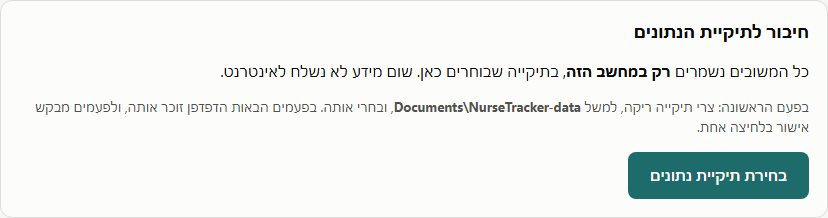
סיסמת מנהלת וקוד שחזור (פעם ראשונה)
הלשוניות סיכום והחלטה וניהול אחיות נעולות בסיסמה. טופס המשוב נשאר פתוח לכל החונכות.
- לוחצים על סיכום והחלטה. בפעם הראשונה מופיע מסך הגדרת סיסמת מנהלת. בוחרים סיסמה (לפחות 6 תווים) ומקלידים אותה פעמיים.
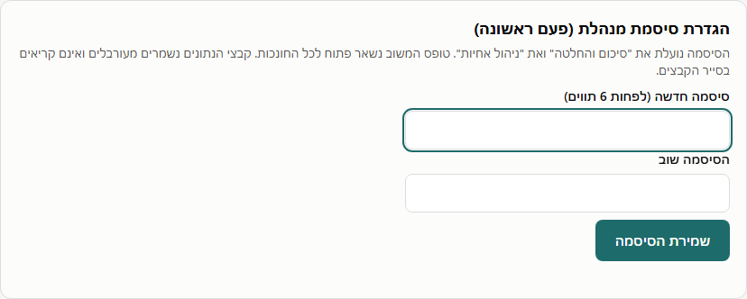
- מופיע קוד שחזור. לוחצים הדפסת הקוד. שומרים עותק אחד בכספת המחלקה ועותק שני אצל הנהלת הסיעוד.
- מקלידים את הקוד בשדה למטה (כדי לוודא שנרשם נכון) ולוחצים סיום.
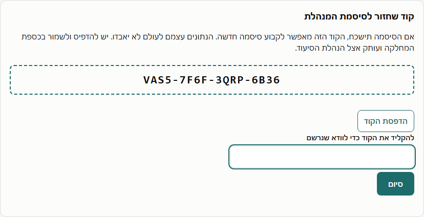
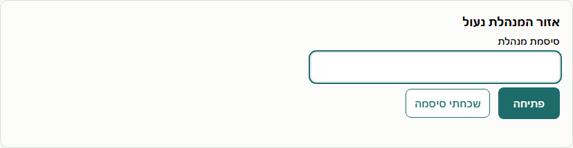
נעילה: כשמסיימים, לוחצים 🔒 נעילת אזור המנהלת בראש הדף. האזור ננעל גם לבד אחרי 10 דקות בלי שימוש, וכשסוגרים או מרעננים את הדף.
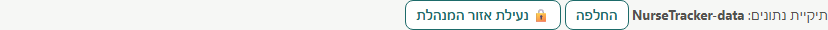
סיכום התקדמות של אחות חדשה
בלשונית סיכום והחלטה בוחרים אחות מהרשימה.
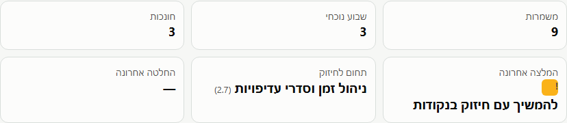
מפת ההתקדמות היא הגרף העיקרי:
- כל שורה היא סעיף, כל עמודה היא משמרת. המשמרת הישנה בימין, החדשה בשמאל.
- כהה יותר = עצמאית יותר. המספר כתוב בכל משבצת. "—" = לא נצפה.
- מתחת: ממוצע המשמרת וההמלצה של החונכת (✓ להמשיך · ! חיזוק · ? חשש · ✕ לא מומלץ).
- מעבר עם העכבר על משבצת מראה מי החונכת ובאיזה שבוע.
- מה מחפשים: שורות שמתכהות משמאל לימין = שיפור. שורה שנשארת בהירה = נושא לחיזוק.
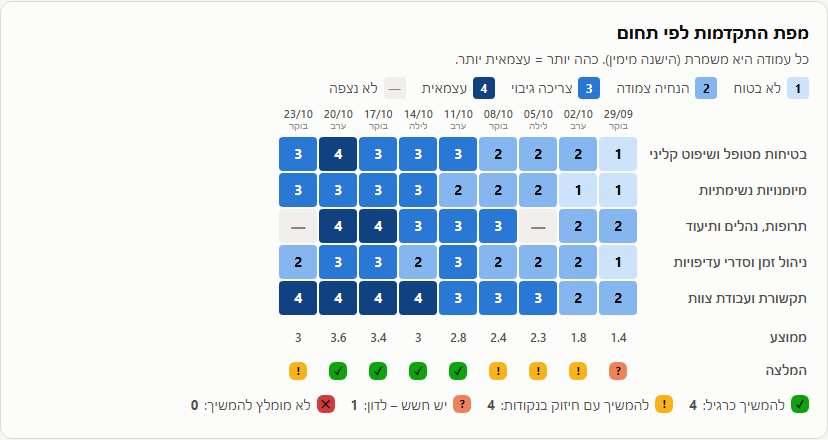
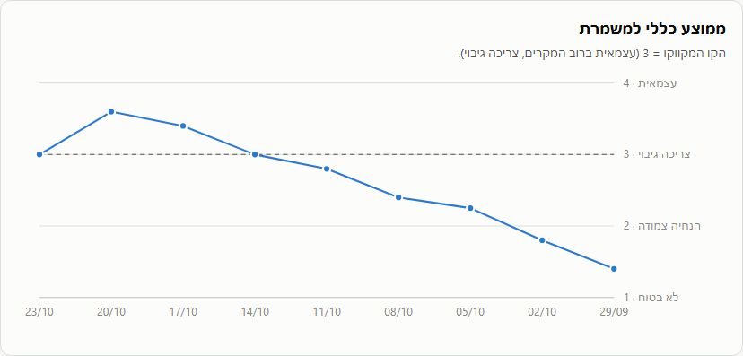
מתחת לגרפים: טבלת סיכום לכל סעיף (ציון ראשון, אחרון, ממוצע 3 אחרונות, שינוי), הערות החונכות מהחדשה לישנה, והיסטוריית ההחלטות.
רישום החלטה וביטול טופס
בתחתית הסיכום: בוחרים החלטה (סיום / המשך / הארכת אוריינטציה / לדיון), שם המחליטה והערה, ולוחצים שמירת ההחלטה. החלטות קודמות לא נמחקות - יש היסטוריה מלאה.
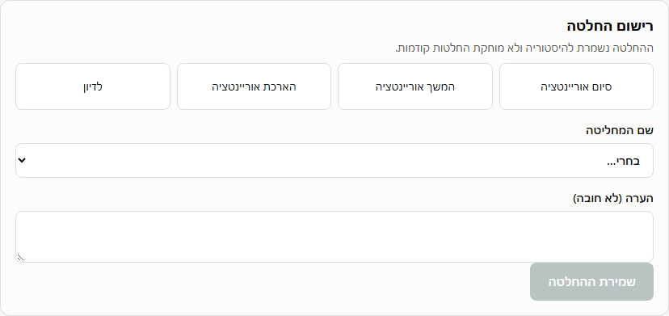
ביטול טופס (למשל תאריך שגוי): פותחים את כל המשמרות (טבלה) בתחתית, ולוחצים ביטול טופס בשורה המתאימה. הטופס יוצא מהסיכום ומהגרפים, אבל לא נמחק מהארכיון.
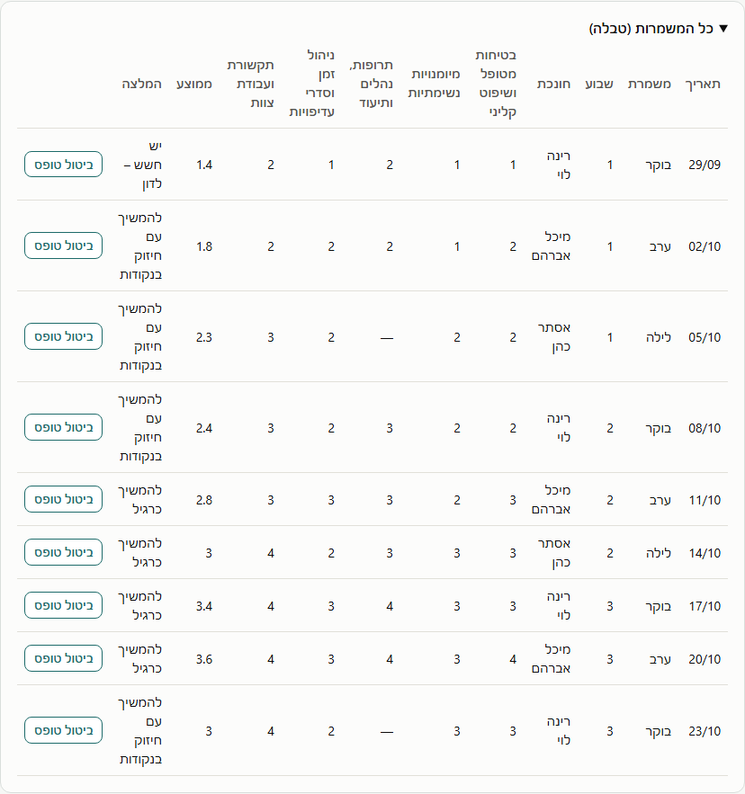
PDF לתיק האישי
בוחרים אחות ולוחצים ייצוא PDF מוגן בסיסמה. הקובץ נשמר בתיקיית הורדות, ונפתח רק עם סיסמת המנהלת (הסיסמה שהייתה בזמן הייצוא). אפשר להדפיס אותו או לצרף לתיק.
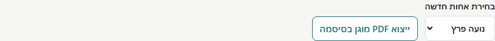
ניהול אחיות
- תיקון שם: משנים את השם ולוחצים שמירה. כל הטפסים הקודמים נשארים מחוברים לאותה אחות.
- סיימה אוריינטציה (אחות חדשה) / לא פעילה (חונכת): מסמנים ושומרים. השם יורד מרשימות הטופס, אבל כל הנתונים נשמרים ואפשר לראות אותם בסיכום.
- החלפת סיסמת המנהלת: בתחתית הלשונית. קוד השחזור נשאר אותו קוד.
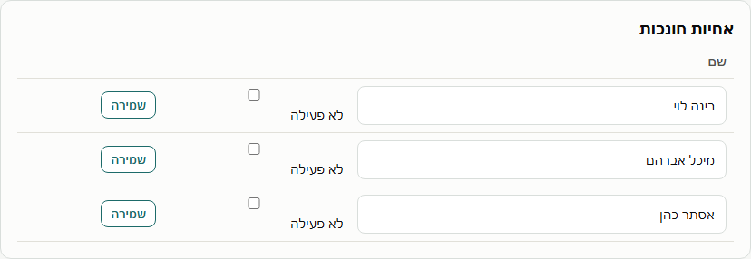
גיבוי
הנתונים קיימים רק בתיקיית הנתונים במחשב המחלקה. פעם בשבוע מעתיקים את כל התיקייה (למשל NurseTracker-data) לדיסק-און-קי או לתיקיית רשת של בית החולים.
הקבצים בתיקייה מעורבלים - פתיחה שלהם בפנקס רשימות מראה ג'יבריש. זה תקין, וזה מונע מעיון מקרי בהערכות.
שאלות ותקלות
| "הדפדפן הזה לא נתמך" | לפתוח את הקישור ב-Edge או ב-Chrome (לא Firefox). |
| הדף מבקש לבחור תיקייה שוב | התיקייה הועברה או ששונה שמה, או שנתוני הדפדפן נמחקו. לבחור שוב את אותה תיקייה - הנתונים עדיין שם. |
| הדף לא נפתח בכלל | אין אינטרנט והדף לא נפתח במחשב הזה עם אינטרנט קודם, או שרשת בית החולים חוסמת את האתר. לפנות למחשוב. |
| אין אינטרנט | אם הדף כבר נפתח פעם במחשב הזה, הוא נפתח גם בלי אינטרנט, והשמירה עובדת כרגיל. |
| שכחתי סיסמה | במסך הנעילה: שכחתי סיסמה › קוד השחזור › סיסמה חדשה. |
| אבדו גם הסיסמה וגם קוד השחזור | הנתונים לא אבדו. לפנות למי שתחזק את המערכת. |
| שם של אחות כתוב לא נכון | האחות האחראית מתקנת בלשונית ניהול אחיות. |
| האם המידע עולה לאינטרנט? | לא. הכול נשמר רק במחשב המחלקה. הדף חסום טכנית מלשלוח מידע לכל אתר. |
השמות בצילומי המסך הם לדוגמה בלבד. ← חזרה לדף המשוב